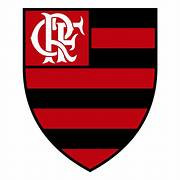

O início 
Curiosamente, o Flamengo, conhecido pelo seu uniforme rubro-negro, nasceu com outras cores. Inicialmente, os uniformes eram azul e amarelo ouro. Foi somente em novembro de 1886 que houve a mudança para vermelho e preto. Em 28 de outubro de 1902, houve a mudança de nome para Clube de Regatas do Flamengo.
Desde então, o Flamengo se estabeleceu com um dos clubes com mais títulos do país e passou a formar a maior torcida de futebol do mundo. Não à toa, o Rubro-Negro é conhecido como “O mais querido”.
Os principais títulos
Um dos clubes mais vitoriosos do futebol brasileiro, o Flamengo é tricampeão da Copa Libertadores, com títulos conquistados em 1981, 2019 e 2022. O clube rubro-negro também foi campeão do Mundial de Clubes de 1981, com vitória sobre o Liverpool por 3 a 0.
No futebol nacional, o Flamengo conquistou o título do Campeonato Brasileiro por 8 vezes, em 1980, 1982, 1983, 1987 1992, 2009, 2019 e 2020.
O Flamengo tem também quatro títulos da Copa do Brasil, em 1990, 2006, 2013 e 2022
Além dos títulos da Supercopa do Brasil de 2020 e 2021.
Também em 2020, o rubro-negro foi campeão da Recopa Sul-Americana.
No Rio de Janeiro, é o maior campeão estadual, com 37 títulos do Campeonato Carioca
O Campeonato Brasileiro de 1987
O Flamengo se considera campeão brasileiro de 1987, mas esse título não é reconhecido pela CBF nem pela Justiça.
Naquele ano, o Flamengo venceu um dos Módulos do campeonato, enquanto o Sport foi o campeão do outro. O clube carioca se recusou a enfrentar o time pernambucano, conforme havia sido determinado pela CBF. Diante desse imbróglio, Flamengo e Sport se consideram campeões brasileiros de 1987. A disputa pelo título daquele ano teve uma longa briga judicial, até que em 2017, 30 anos depois daquela edição, o Superior Tribunal Federal (STF), órgão máximo do sistema judicial brasileiro, decidiu a favor do Sport, reconhecendo o time pernambucano como o campeão brasileiro de 1987.
A decisão é em última instância e não cabe mais recurso ao Flamengo. Apesar de os flamenguistas celebrarem o título nacional de 1987, Sport e Guarani foram os representantes do Brasil na Copa Libertadores do ano seguinte.
Diante da decisão do STF, o título conquistado pelo Flamengo em 2020 é o sétimo brasileiro efetivamente reconhecido pela CBF e pela Justiça.
O maior ídolo do CRF
Não há dúvidas que o maior jogador da história do Flamengo foi Zico. O ex-camisa 10 foi formado pelo clube e liderou uma das eras mais vitoriosas de um time no futebol brasileiro.
Zico foi campeão da Copa Libertadores e do Mundial de Clubes em 1981, venceu o Campeonato Brasileiro de 1980, 1982 e 1983, além da Copa União de 1987, que é considerada pelos rubro-negros como o título do Brasileirão daquele ano.
No Brasil, Zico defendeu somente o Flamengo e é o maior artilheiro da história do clube, com 509 gols. Ele jogou ainda pela Udinese, na Itália, e pelo Kashima Antlers, no Japão.